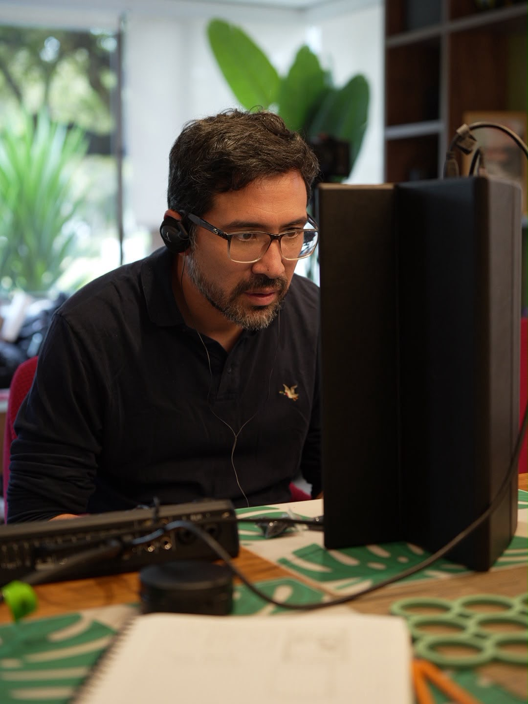
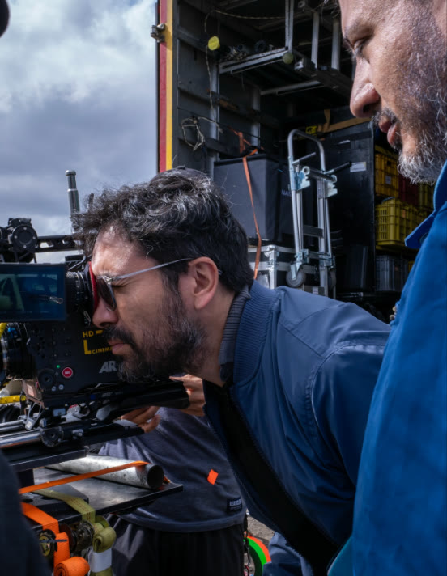
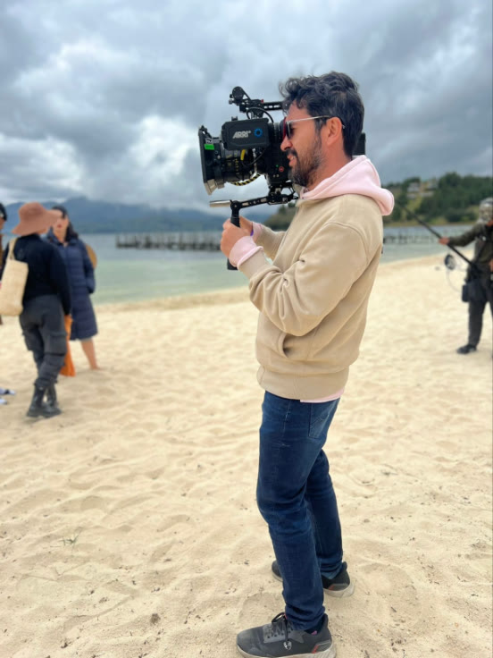
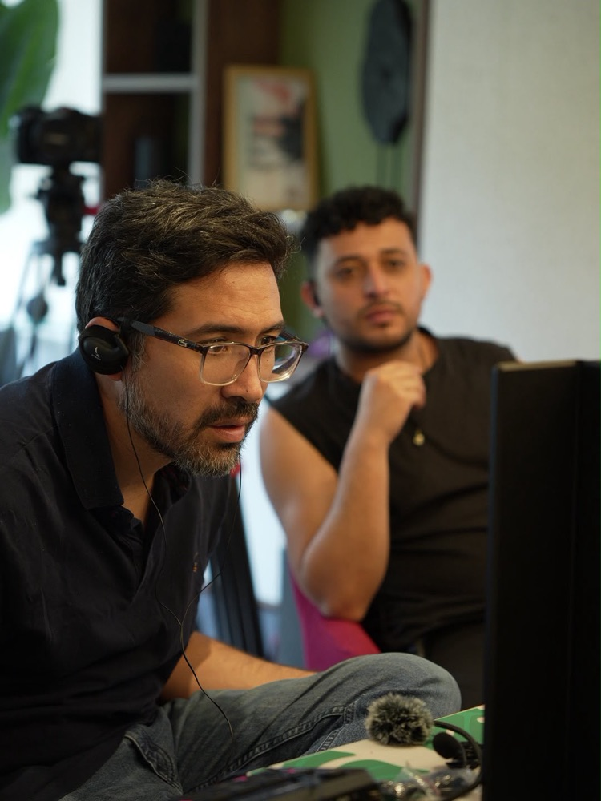
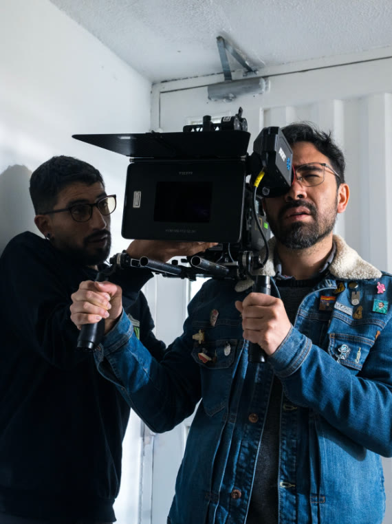
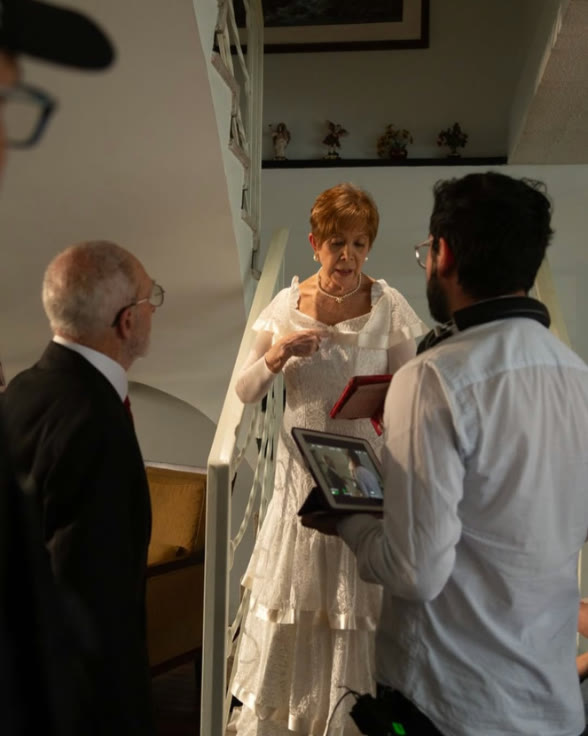
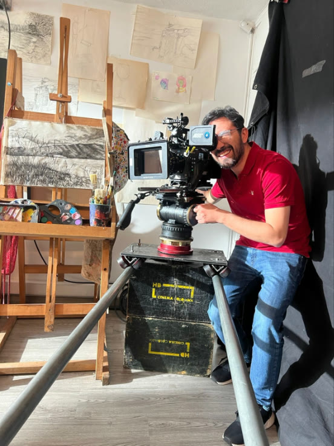

Nominado · Mejor Dirección de Ficción · India Catalina 2026
Víctor Quesada
Director y CEO
Director, guionista y productor. Ha dirigido más de 30 montajes y trabajado con Fox Telecolombia, Netflix, RCN, Dago García Producciones y The Walt Disney Company. Politólogo de la Javeriana, con maestría en Dirección Teatral de la Universidad de Essex.
Dirige de cerca: viene del teatro y sabe hablar con los actores. Sus historias tratan la neurodiversidad, la masculinidad vulnerable y el duelo.
Fotos: Diego Vega (Milo y yo), Briand Bohórquez (Vertical HAZLO) y Nataly Páez (Manual de matrimonio).